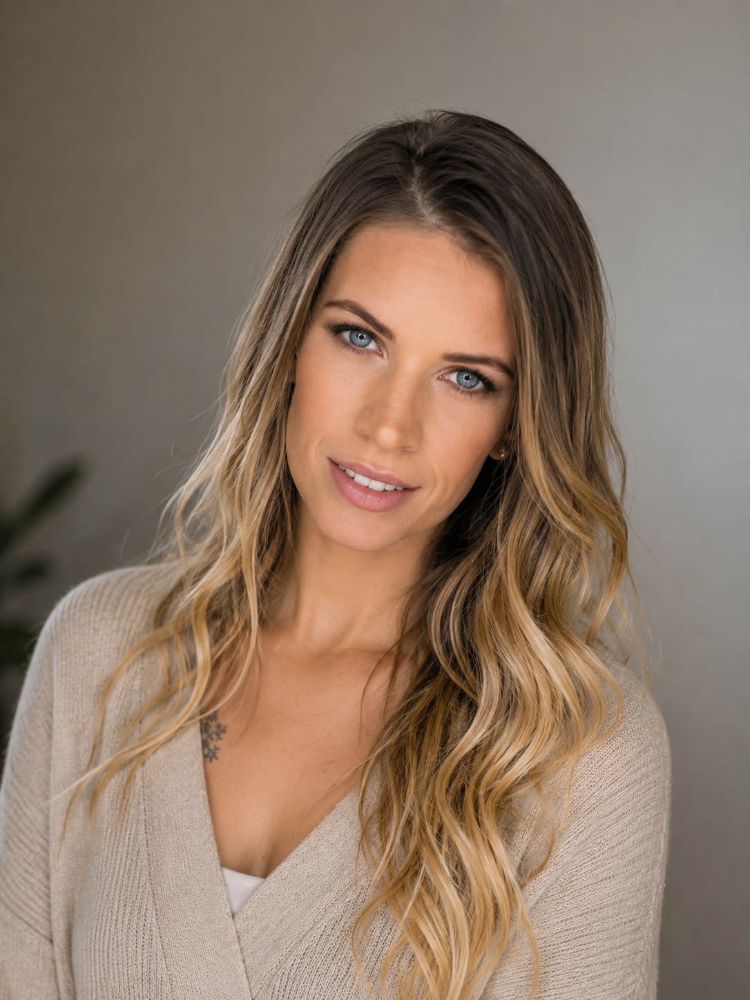
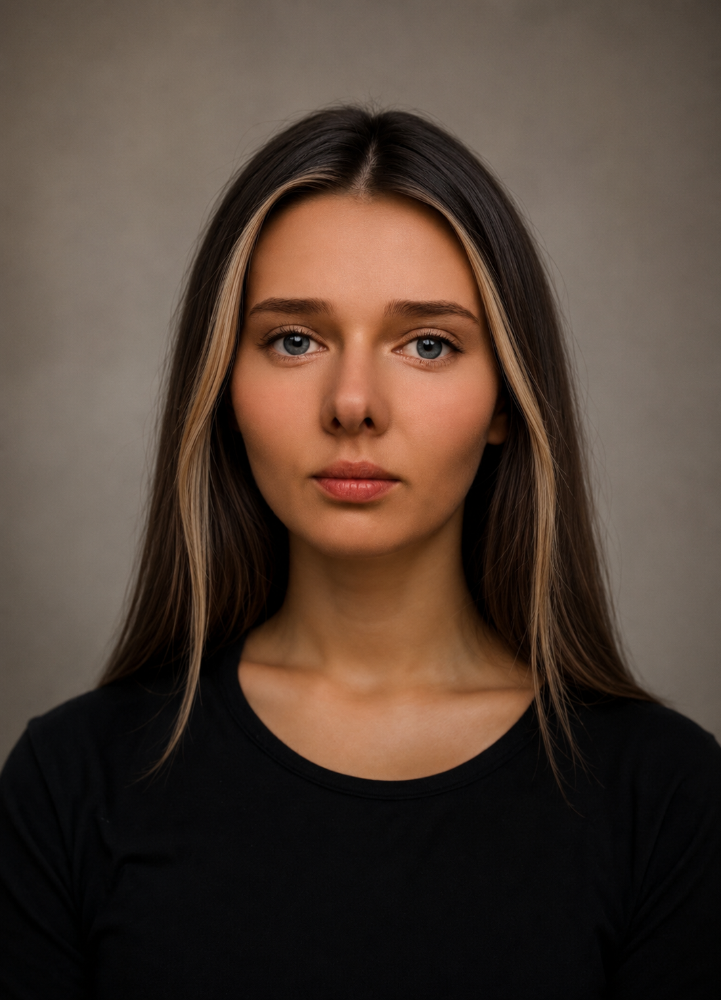

Hi, I’m Maya 👋 I’ve been through depression and still live with anxiety, so I understand how heavy things can feel sometimes. 💙
I studied religion pedagogy at Vytautas Magnus University for four years. During that time, I learned about spiritual and psychological support from experienced lecturers, and I believed I could help anyone. But when depression came, I realised that knowledge alone wasn’t enough — and at the beginning, I could hardly help myself. But over time, through my own experience and support from others, I started finding ways to cope and feel better.
That’s how Ease Your Anxiety was created — a quiet space with simple tools, gentle ideas, and honest words.
I’m also the author of Happy: Emotional Colouring, a small book created to help people relax and slow down through simple creativity. 🎨
This space is something I continue to build and grow, step by step.🫂
My name is Žiedūnė Hema Kusk. Currently, I am the director of an architectural design company, and I have a great passion for the arts, including painting, photography, poetry, and writing short essays.
I am also keenly interested in art therapy. My sister has disabilities, which inspired me to research ways to help her and others with similar challenges. I discovered that art and art therapy can significantly aid in managing complex disabilities.
In 2014, I opened an art studio in Lithuania called “Art Room,” 🎨🖌️ which also functioned as an art gallery to help disabled individuals sell their artwork. It collaborated with various organizations on social integration projects. I also spoke on radio and was featured in “Kaunas Day newspaper.”
Later, I worked at Kaunas Technology University with international students, helping them use art for stress relief. After moving to the UK in 2017, I joined the Peterborough Society of Arts and participated in exhibitions.
Now, as a mother, I’ve reduced my activities but continue to create through writing and painting.💖

Hi, I’m Dovilė — one of the faces behind Ease Your Anxiety. From a young age, I felt a strong empathy for others, which led me to study psychology and mental health support. 💛✨
My goal is to help people navigate tough emotions and challenges with practical, kind advice. Here at Ease Your Anxiety, I share what I’ve learned to empower you on your mental health journey. 🌱💪
I hope this space feels safe and supportive for everyone looking for understanding and encouragement. 🤗💫